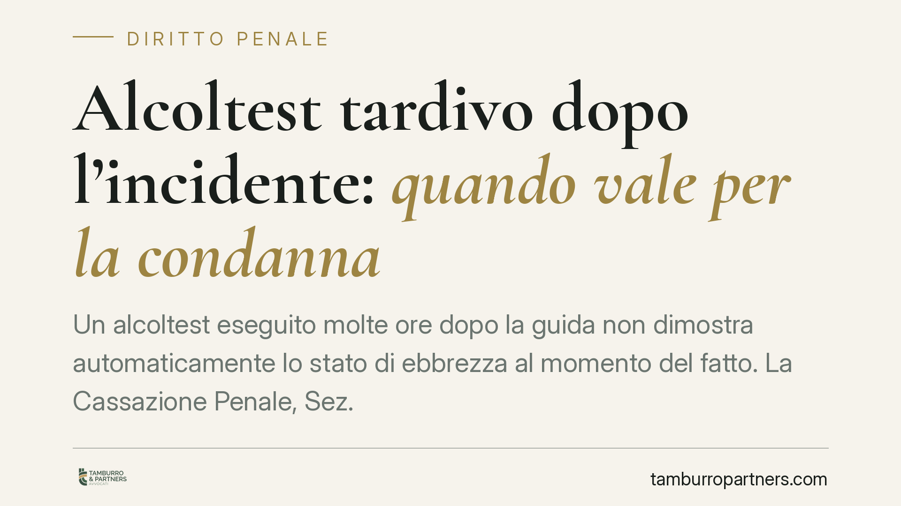

Alcoltest tardivo dopo l'incidente: quando vale per la condanna
Un alcoltest eseguito molte ore dopo la guida non dimostra automaticamente lo stato di ebbrezza al momento del fatto. La Cassazione Penale, Sez. IV, torna sul tema richiamando la curva di assorbimento dell'alcol e il valore dei sintomi rilevati. Per l'automobilista imputato cambia il modo di impostare la difesa: il dato numerico va contestualizzato, non subìto.

Il caso
La questione è ricorrente: un conducente coinvolto in un sinistro viene sottoposto all'etilometro con sensibile ritardo rispetto al momento della guida. Il valore supera la soglia penale. È sufficiente, da solo, per la condanna?
Secondo un orientamento richiamato dalla Sez. IV della Cassazione, la risposta è no in via automatica. Il dato strumentale tardivo non fotografa necessariamente il tasso alcolemico al momento in cui il soggetto era alla guida. Va letto insieme ad altri elementi.
*Nota: la pronuncia indicata dalla fonte (n. 6795/2026) è, alla data di redazione, da ritenersi in attesa di massimazione ufficiale. Il principio esposto è comunque conforme all'indirizzo consolidato della Sez. IV sulla non automaticità del dato etilometrico tardivo.*
Inquadramento normativo
L'art. 186 del Codice della Strada distingue tre situazioni in base al tasso alcolemico, e la distinzione è decisiva:
- da 0,5 a 0,8 g/l (comma 2, lett. a): è un illecito amministrativo, non un reato;
- oltre 0,8 e fino a 1,5 g/l (lett. b): è reato, punito con ammenda e arresto;
- oltre 1,5 g/l (lett. c): è reato più grave, con sanzioni aumentate.
Solo le ultime due fasce rilevano in sede penale. Confondere il limite amministrativo con quello penale è un errore frequente che incide sull'impostazione della difesa.
Sul piano strumentale, il DPR 495/1992 (regolamento di attuazione del Codice della Strada, art. 379) prevede che l'accertamento avvenga mediante due misurazioni a distanza di circa cinque minuti l'una dall'altra. È un requisito di affidabilità del dato: la sua assenza o irregolarità è terreno di contestazione.
La curva di assorbimento
L'alcol ingerito non raggiunge subito il picco nel sangue. Esiste una fase di assorbimento, in cui il tasso sale, seguita da una fase di eliminazione, in cui scende progressivamente.
Questo significa che un valore rilevato molte ore dopo la guida può essere *inferiore* a quello reale del momento del sinistro (se la misurazione cade nella fase di eliminazione) oppure, in casi particolari, poco rappresentativo in senso opposto. Il dato tardivo, insomma, non è traslabile all'indietro con una semplice somma aritmetica.
Da qui il principio: nessun automatismo probatorio. Il giudice deve valutare il valore numerico insieme ai cosiddetti sintomi tipici dell'ebbrezza rilevati dagli agenti (alito vinoso, eloquio sconnesso, andatura incerta, occhi lucidi) e alle circostanze concrete.
Il profilo processuale: chi deve provare cosa
Il punto delicato riguarda l'onere della prova. Il dato etilometrico, se regolarmente acquisito, fa comunque stato come elemento a carico. Spetta quindi alla difesa allegare e, per quanto possibile, dimostrare gli elementi che rendono quel dato *non rappresentativo* del tasso alla guida: l'intervallo temporale trascorso, l'eventuale assunzione di alcol dopo il fatto, la collocazione della misurazione nella curva di assorbimento o eliminazione.
Non basta affermare genericamente il ritardo: occorre fornire al giudice elementi concreti da cui desumere l'inattendibilità del dato nel caso specifico.
Implicazioni pratiche
Per chi è coinvolto in un procedimento, ciò comporta che la sola lettura del valore sul verbale non chiude la partita. Il tempo trascorso tra guida e misurazione, la regolarità della procedura e la presenza o assenza di sintomi documentati diventano tutti elementi di valutazione.
Cosa fare in concreto
- Annotare l'orario della guida, del sinistro e delle misurazioni: l'intervallo temporale è il primo dato difensivo.
- Verificare la doppia misurazione prevista dal DPR 495/1992: controllare che siano stati eseguiti due test a distanza di circa cinque minuti e che i valori siano coerenti.
- Controllare l'omologazione e la taratura dell'etilometro, requisiti di affidabilità del risultato.
- Raccogliere elementi sulla sequenza degli eventi (eventuali consumi successivi alla guida, condizioni fisiche, documentazione sanitaria del pronto soccorso).
- Rivolgersi tempestivamente a un difensore: molte contestazioni sul dato strumentale hanno termini stretti e richiedono valutazioni tecniche mirate.
Resta fermo un dato di realtà: il ritardo nell'alcoltest non è una scorciatoia verso l'assoluzione. È un elemento che impone una valutazione più accurata, non un'esclusione automatica di responsabilità.
Disclaimer
Contributo informativo a cura di Tamburro & Partners - Avv. Giuseppe Tamburro. Non costituisce parere legale.
Ogni condominio ha una storia a sé.
Se gestisci un'amministrazione e vuoi un confronto su una specifica questione condominiale, scrivi allo studio. Ti rispondiamo entro un giorno lavorativo.